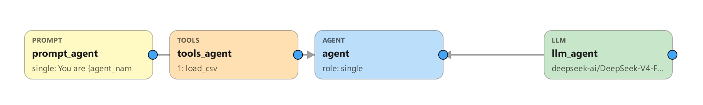
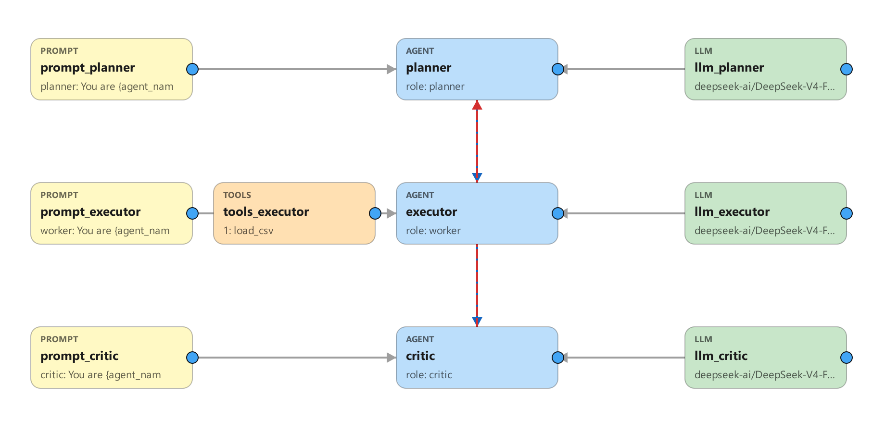
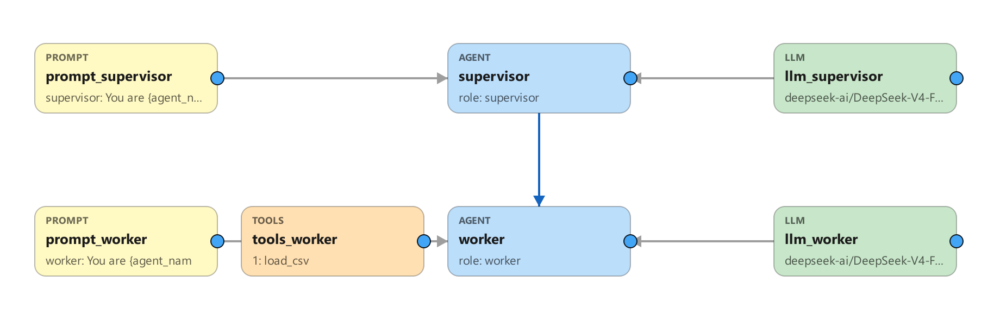
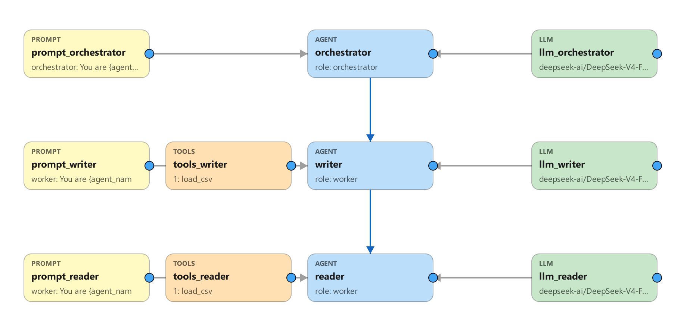
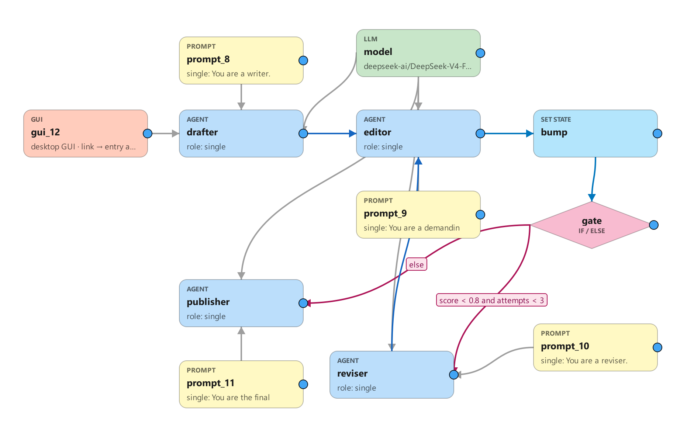

Build AI agents on a visual canvas. Generate standalone Python. No LangChain.
MetaAgent is a desktop app (PySide6/Qt) where you draw an AI agent — or a whole team of agents — as a node graph, then press Generate Code to compile that graph into a self-contained Python folder you can run, ship, or compile to an .exe. You wire agents to the resources they consume (an LLM, tools, a prompt persona, skills, RAG docs, MCP servers) and the control-flow nodes that route between them (routers, If/Else conditions, set-state, human checkpoints). The compiler reads your graph, validates it, and emits a plain agent.py plus config.json, requirements.txt, build.bat, and a README.
The big idea: canvas → standalone Python, with zero LangChain at runtime. Tool files are inlined verbatim, the ReAct loop is hand-written, and the LLM is called through the openai/anthropic SDKs directly. The default backend is DeepSeek-V4-Flash via SiliconFlow. Generated agents depend on essentially just openai and anthropic (plus whatever your tools import) — they are small, readable, and have no framework to keep up to date.
There are 24 node kinds. Agent-stage nodes are the "stages" in your pipeline; resource nodes feed into an agent; control nodes sit in the flow with no LLM; a subgraph node embeds a whole other graph as one composite step; and a few nodes emit frontends or tests.
| Kind | Label | Role | What it does |
|---|---|---|---|
agent |
Agent | stage | One ReAct agent. Has a role, budgets, reads/writes. |
workerpool |
Worker Pool | stage | Like an agent but runs N parallel workers (max_workers, default 4). |
router |
Router | stage | Uses an LLM to pick one successor at runtime. |
llm |
LLM | resource → agent | Assigns the model. First link = primary, extras = fallbacks. |
tool |
Tools | resource → agent | Attaches every @tool function in the node's .py files. |
skill |
Skills | resource → agent | Appends skill text to the system prompt. |
prompt |
Prompt | resource → agent | Sets the agent's persona (max 1). |
rag |
RAG | resource → agent | Gives the agent a search_<kb> retrieval tool (BM25 by default; configurable — see §6). Multiple RAG nodes per agent OK — each becomes its own tool and the agent picks by description. |
memory |
Memory | resource → agent | Gives the agent remember(content, tags) + recall(query) tools backed by a persistent store (memory_store.json) + BM25 retrieval. Survives restarts, so the agent learns across runs (Reflexion-style): recall past lessons before acting, remember new ones after. top_k = default recall size. |
mcp |
MCP | resource → agent | Connects an external MCP server; tools discovered at runtime (multiple OK). |
condition |
If/Else | control | The diamond. Routes to a branch by a safe expression over state. |
while |
While | control | A diamond loop guard: run the body successor while a condition holds, else take the exit successor. Compiles to the same routing primitive as If/Else. |
foreach |
For-Each | control | A diamond map-over-list: runs its body successor once per item of a shared-state list field (over), the items running in parallel on isolated state forks (a dynamic fan-out). Each item is passed to the body both as its input and, when item_var is set, written to that state field; the body must link back to the For-Each node, and the OTHER outgoing link is the exit (taken once, after every item). Optional result_field collects each item's output into a list; merge combines the outputs (concat/first/last/state_only/vote); max_parallel caps concurrency (0 = all at once). The list is produced upstream (an agent write or a Set-State). |
setstate |
Set State | control | Writes shared state directly (literals or =expr). |
guardrail |
Guardrail | control | An inline content gate: redacts or blocks the content flowing through it. Checks for secrets / PII / prompt-injection; on_trip = redact or block (injection always blocks). See §11. |
end |
End | control | A terminal sink (no outgoing links). When the flow reaches it the run finishes early, returning whatever output was carried in. Use it on an If/Else branch or While exit to stop before the rest of the pipeline. |
fanout |
Fan-out | control | Runs its 2+ branches CONCURRENTLY (real threads), then reconverges at the paired Join. Each branch is an independent agent chain (may include Set-State). max_parallel caps concurrency (0 = unbounded). |
join |
Join | control | The barrier that reconverges a Fan-out's branches. Their shared-state writes are merged via each field's reducer (concurrent writes to one overwrite field are rejected — use append/add/max/min). merge = how the branch output text combines (concat / first / last / state_only / vote = the majority branch output, ties → first, for self-consistency on a label/number). |
hitl |
HITL | flow gate / branch | A human checkpoint. With one outgoing link it's a review gate (approve / edit / reject before the next stage). With 2+ outgoing links it's a human-driven branch (route mode): the reviewer picks which successor runs next — the human mirror of a Router. |
webserver |
WebServer | output | Emits server.py (websocket + web UI). Standalone, one per graph. |
gui |
GUI | output | Emits gui.py (desktop chat) when linked to the entry agent — built-in window, or your own custom gui.py (Extra Settings). |
schedule |
Schedule | output | Emits scheduler.py when linked to the entry agent — an ambient runner that calls the agent every every_seconds with a preset task (no user prompt). Pick a Strategy: Periodic (every_seconds + offset_seconds + run_at_start), Daily (at = local HH:MM[:SS]), or Once (start_at = exact YYYY-MM-DD HH:MM[:SS]) — mutually exclusive (the others' fields grey out). Plus task, max_runs, session_id. Multiple allowed — each Schedule node is an independent concurrent job over the agent. |
eval |
Eval | testing | A graded test set for one agent or the whole pipeline. |
subgraph |
Subgraph | composition | Embeds another whole graph as one composite step. Its incoming edge feeds the child's entry agent; the child's End (or last stage) continues to this node's successor. The child is stored inline (Load .mta… in the dialog) so the parent stays self-contained, and is flattened in at generation (expand_subgraphs) with child node names namespaced sub/name; the child's tools/prompts/LLMs come along and its shared-state fields merge into the parent's. Reuse a validated sub-pipeline, or collapse a big graph into readable pieces. Nested subgraphs flatten first; a recursive include is rejected. |
Node shapes. On the canvas a node's shape tells you its role at a glance, while its colour identifies the exact kind. The silhouettes: rounded rectangle = an actor (agent — a worker pool is drawn stacked; a subgraph is a rectangle too, since it acts as a composite stage); diamond = a decision/branch (router, If/Else, While, For-Each); cylinder = a knowledge store (RAG); document (wavy foot) = text/instructions (prompt, skill); hexagon = a compute engine (LLM, eval); parallelogram = a capability or I/O (tools, MCP, Set State); octagon = a gate/checkpoint (guardrail, HITL); trapezoid = an interface/output (web server, GUI); stadium (a pill with rounded ends) = a terminal (End). The Add module palette draws each button with its silhouette, so it doubles as a legend.
Every agent/workerpool node has a role (the Agent dialog's dropdown) that sets its default persona (prompt template) and how it behaves in a pattern. The six roles:
| Role | Behavior | Typical use |
|---|---|---|
single |
A general ReAct agent (the default) — runs alone or as one chain stage. | Any standalone agent. |
planner |
Breaks the task into a numbered plan for the next agent; doesn't execute. May self-route (route_self, planner-only, needs 2+ outgoing links). |
Planner–executor; Adaptive-RAG router. |
worker |
Executes the task (and the plan, if given) thoroughly and reports. Tool-eligible. | The "doer" in most patterns. |
critic |
Reviews the previous agent's output; can send it back by starting its reply with REVISE: (a bounded revise loop). |
Planner–executor–critic. |
supervisor |
Delegates one instruction at a time to its workers (NEXT/DONE), reviewing each result. Entry-only; workers must be leaves. | Supervisor–worker. |
orchestrator |
Spawns isolated sub-agents in parallel via the built-in spawn_subagent tool; each runs with only its own tools and returns just its result. Entry-only; sub-agents are linked leaves. |
Autonomous orchestration. |
(The router "role" comes from the Router node kind, not this dropdown.) The Agent dialog greys out fields that don't apply to the chosen role (e.g. routing fields are planner-only).
Dependency-aware Worker Pool (DAG). Turn on "Emit a typed dependency plan" (structured_plan) on a Planner and "Dependency-aware execution" (dag_plan) on a downstream Worker Pool: the planner appends a small typed plan — a list of {id, subgoal, depends_on} — and the pool runs it as a DAG, so independent subgoals run in parallel (up to max_workers) while each dependent waits for its prerequisites and receives their outputs as context. One subgoal failing doesn't sink the batch. If the plan is missing, malformed, or cyclic the pool safely falls back to splitting the work flatly (no behaviour change). Enabling the planner option with no matching pool downstream raises an Analyze warning.
A link's meaning is entirely about what it connects:
llm→agent assigns a model, tool→agent attaches functions, prompt→agent sets persona, skill→agent adds guidance, rag→agent adds search_docs, mcp→agent connects a server.You link by dragging from a node's blue right-port ● onto a target. ALLOWED_EDGES enforces what can connect; SINGLETON_INPUTS caps prompt/gui to one per agent (RAG is no longer capped — link several). Self-links and duplicate links are rejected, as is a second Tools node bringing the same .py file to one agent.
⚠ Maintenance rule — any change to the canvas must update the built-in knowledge in the same commit. The Estimation / design-assistant feature ships an embedded description of the canvas that the LLM reasons from. Whenever you change the canvas vocabulary or semantics — a node kind in
KIND_META, a role inROLE_DEFAULT_PROMPTS, a pattern inPATTERNS, an edge rule inALLOWED_EDGES/SINGLETON_INPUTS, aSTATE_TYPESentry, default budgets, or a validity rule inanalyze()— you must mirror it indesign_assistant.py(KIND_DESC,ROLE_SEMANTICS,EDGE_SEMANTICS,CANVAS_RULES,CANVAS_DESIGN, and the pattern topologies) and in the node/link tables in this document. The enumerable parts are guarded bytests/_verify_design_assistant.py(it fails ifKIND_DESC/ROLE_SEMANTICSdon't cover the registries); the prose (design narrative, rules, edge semantics) and this doc's tables are not machine-checkable, so update them by hand. Rule of thumb: if you change what the canvas can do, update the knowledge alongside it — otherwise the assistant gives outdated answers.
Link contracts (double-click a link). A link can carry a contract, shown as a badge on the line and edited by double-clicking it (or right-click → Configure link…):
- agent → agent — a data-handoff contract. Declare the fields the upstream produces = the downstream consumes (each a name, type, description — like a shared-state field, but scoped to this one link). At generation it's written into both system prompts: the producer is told to output those fields, the consumer to expect them. (Routers don't carry a contract — they forward text and pick a branch, they don't reshape data.)
- Advisory (default): it shapes the prompts only — the data still flows as the previous agent's output text.
- Validate & retry (opt-in checkbox on the link): the producer must reply with a JSON object of exactly those fields; the runtime validates it (all fields present + right type) and, on a mismatch, re-runs the producer with the specific error (bounded by max retries, default 2). If it still fails, the run stops with [contract not met] rather than passing invalid data on. Works in both chain and graph mode.
- If/Else → target — the branch predicate. Set the expression that routes to this link (empty = the else/fallback). It writes to the If/Else node's branch list (the single source of truth), so the node's own dialog and the link stay in sync.
- While → target — loop body or exit. Mark which link is the loop body (runs while the condition holds, must loop back) and which is the exit.
Branching rule: a plain agent or pool may have at most one outgoing flow link. To pick one branch at runtime, use a Router (LLM picks), a routing HITL (a human picks — draw 2+ links out of a HITL node), a Supervisor, an Orchestrator, a self-routing Planner (
role=planner+route_self+ 2+ links), or route into a single If/Else node. To run branches in parallel (all of them, concurrently) use a Fan-out → branches → Join. A second outgoing edge from a plain agent is a generation error.
At generation time analyze() inspects the graph and picks one mode from the entry agent's role and the presence of routers/conditions. The entry agent is the one with no incoming flow link.
| Mode | Chosen when | Behavior |
|---|---|---|
| chain | default — linear pipeline | Agents run in order; optional single revise back-edge. |
| graph | any Router, self-routing planner, or any control node — Condition, While, Set-State, Guardrail, End, or Fan-out/Join — present (and entry is not supervisor/orchestrator) | BFS walk with runtime routing, bounded while-loops, and concurrent fan-out branches. |
| supervisor | entry role = supervisor |
Star delegation loop (NEXT/DONE); workers must be leaves. |
| autonomous | entry role = orchestrator |
Orchestrator spawns isolated sub-agents in parallel. |
Key runtime fact: in chain, graph, and supervisor modes the generated agents do not call each other. A driver loop (run_pipeline / run_graph / run_supervisor) sequences the stages, runs each agent's own ReAct loop in isolation, and passes the previous stage's output forward as plain text plus a read-only shared-state preamble. The only exceptions are routers/self-routing planners (the built-in route_to tool picks the next branch) and the orchestrator (the built-in spawn_subagent tool launches sub-agents).
Ctrl+A selects all.Ctrl+C / Ctrl+V duplicates the selected node(s) with their full configuration — fresh ids, unique names, offset; links between copied nodes are re-created. Works across canvas windows.Del to delete.Ctrl+Z undoes the last canvas action (add / delete / move / link / configure / paste …); Ctrl+Y (or Ctrl+Shift+Z) redoes it. Also on the Edit menu. History resets when you start a new project or load a graph.route, spawn, todos, python, web, offload) — green = provided now, faint = available to enable. Hover for names + descriptions.agent.py (and config.json) with that node's contributed regions highlighted — the agent's persona and topology entry, a tool's inlined function, an LLM's config.json block, a condition/setstate branch, etc. It generates the app to a temp folder, locates each region by anchor search (no template changes, so generation stays byte-identical), and opens a read-only, resizable viewer that scrolls to the first region. The un-highlighted remainder is the shared runtime, which belongs to no single node. Double-click still means Configure; Check Code is a separate, non-destructive view.+/− sections (Planner & routing · Capabilities & tools · Retrieval & answer quality · Budgets · Guardrails · Extra Settings · Structured final answer), and greys out fields that don't apply to the selected role (e.g. routing fields are planner-only) with a tooltip explaining why.max_retries, first-turn tool_choice (auto/any/none/specific), input/output prices ($/1M tok, which enable an agent's cost cap), and a raw-JSON escape hatch.mode_label (multi-pattern /mode), max requests/min (rate limit), stage retries (re-run a stage on a transient error), max budget ($) (abort when estimated cost hits the cap — needs the LLM's prices set), on budget exceeded (continue/stop/retry — what to do when this stage hits any budget cap; see §3 step 6), and a Structured final answer JSON-Schema (validates + re-asks, then returns clean JSON).*.md), and multi-query expansion (search N LLM-generated variants and fuse).Authorization).gui.py — replace the built-in chat window with your own single-file front-end (Choose a .py, or "Use built-in" to revert). It must import agent and call agent.run(...); any @AGENT_NAME@ in the file is filled in on generate. The designer flags a syntax error and warns if the file never runs the agent.pip install -r requirements.txt then python main.py. (Deps: PySide6 6.6+, openai 1.40+.) The welcome launcher offers New project, Open bundle, Recent, and Settings.build.nvidia.com, OpenAI, DeepSeek, Gemini) to auto-fill Base URL + Model, then paste that provider's API key (e.g. nvapi-… for NVIDIA). The host config.json next to main.py defaults to model deepseek-ai/DeepSeek-V4-Flash, base_url https://api.siliconflow.cn/v1 (no chat-completions suffix). Any OpenAI-compatible endpoint works for both the app's coding agent and generated agents.UI language (English / 简体中文). The designer's interface is bilingual. Switch it from the welcome window's Settings → Language menu; the choice is saved in the host
config.json(language) and applied across the welcome window and the canvas (menus, palette, context menus, node labels). Node-config dialogs are currently English. This is a designer-UI setting only — it does not change your agents; to make a generated agent reply in a given language, say so in its Prompt (the built-in Designer and coding agents already mirror the user's language). 3. New project, then add an Agent node (palette+ agentbutton, or right-click → "Add Agent here"). 4. Add an LLM and link it: right-click the agent → Add & link a module → Add LLM. This creates the node, linksllm→agent, and opens its config (providersiliconflow, modeldeepseek-ai/DeepSeek-V4-Flash). 5. Add tools (optional). Right-click the agent → Add & link a module → Add Tools, then check the.pyfiles you want from thetools/library. Or use the Tool Generator (Tools menu) to have an in-app coding agent write a new tool for you. 6. Configure the agent. Double-click it to set its role, budgets, and HITL knobs. Budgets default to0= UNLIMITED (max_iterations/max_tool_calls/max_output_tokens/max_wall_clock_s) so demos run to completion out of the box — set a positive value on any of them to cap cost/runtime in production (the designer decides the real budget).0means: no iteration/tool-call/wall-clock limit, and no explicit output-token cap (the provider default; Anthropic keeps 8000 since it requires one). These budgets are per-STAGE (they reset each time the stage runs) and soft (checked between ReAct steps, never mid-call). By default a stage that hits a cap emits a[budget] …note that simply flows to the next stage; to make a cap actually stop or retry the run, set the agent's On budget exceeded (on_budget, Extra Settings) tostop(end the whole run there) orretry(re-run this stage up to its stage retries with a fresh budget, then stop). For a run-wide time limit that ends the entire run — not just one stage — set Graph → Edit Shared State → "Max run wall-clock (seconds)" (run_wall_clock_s); at the next step/hop boundary the run stops with a[budget] Run wall-clock…message. A single hung in-flight call is bounded only by the LLM node's Request timeout (s). 7. Generate Code. MetaAgent validates the graph and writesgenerated_agents/<name>/containingagent.py,config.json,requirements.txt,build.bat,README.md,system_prompts.json, and anevals/harness. 8. Add your api key. Open the generatedconfig.json. Each agent's LLM lives underllmsas a list (first = primary, rest = fallbacks). Fill inapi_key, or leave it blank to read from an environment variable. 9. Run it. -python agent.py "your task"— headless CLI -python gui.py— desktop chat (only if a GUI node links the entry agent) -python server.pythen openhttp://127.0.0.1:8765/— web UI (only if a WebServer node is present)
To save your work: JSON stores topology (nodes/edges/state); the portable .mta zip also embeds tool sources, prompts, and skills. To make a lean executable, use Compile (clean-venv PyInstaller onedir) rather than building by hand, or the .exe bloats past 200MB.
The Patterns menu inserts a complete preset, building each agent with its own Prompt, LLM, and — depending on the preset — a Tools node or a RAG node. Every preset ships tuned, not bare: each agent gets a purposeful per-role LLM temperature (deterministic 0 for a supervisor's delegation, low 0.2 for planners/workers/critics, 0.3 for a general ReAct agent) and budget head-room where the pattern loops or fans out (the orchestrator and supervisor get more iterations/wall-clock). Prompts are the role's template (already pattern-aware for planner/worker/critic/supervisor/orchestrator), except react, which ships a real think→act→observe prompt, and the retrieval presets, which ship hand-written prompts plus the right capability toggles switched on. Everything is a starting point — edit any node after inserting. Inserting a pattern replaces the entire canvas (it only confirms if you have existing work); it is not a merge.
One single agent with a Tools node, running the classic ReAct loop (think → call tool → observe → repeat → answer). The simplest possible agent; mode = chain.

Three agents: planner → executor → critic, with a critic → planner revise back-edge (painted red, dashed). The planner breaks down the task, the executor does the work, the critic judges it and can send it back. Because there is no Router or Condition, this stays in chain mode and the back-edge is detected as the revise loop. (A simpler planner_executor preset drops the critic.)

A supervisor → worker star: the supervisor delegates by emitting NEXT (pick a worker) or DONE, looping until finished. Workers must be leaves (no outgoing agent links). Mode = supervisor.

An orchestrator → writer + orchestrator → reader graph. The orchestrator is the entry-only owner of the built-in spawn_subagent tool, launching its sub-agents as fresh, isolated ReAct loops (their own tools and budgets, no shared conversation) — and spawns may run in parallel. Sub-agents must be plain Agent leaves; no nested orchestration. Mode = autonomous.
Tuning when it delegates. Because spawn_subagent is just a tool, the orchestrator answers simple tasks itself and delegates only when needed — aim to avoid both over-delegation (spawning for trivial work: slow, costly) and under-delegation (never using sub-agents: pointless). The strongest control is the tool surface: the preset is a pure planner — the orchestrator has no action tools, only spawn_subagent — so link your Tool nodes to the sub-agents, not the orchestrator. Then a pure-reasoning task it answers directly, while anything needing a tool has no local way to do it and must delegate. (Link a few cheap tools to the orchestrator itself for a hybrid.) Reinforce with the orchestrator's prompt ("answer directly when you can; spawn only when a tool, isolation, or parallelism is needed") and a clear first line in each sub-agent's prompt saying what it is for — the orchestrator sees that in its sub-agent menu. Don't try to force a spawn on every task; if anything, cap fan-out with the orchestrator's tool-call / iteration budgets.

A coordinator → Fan-out → {worker_1, worker_2, worker_3} → Join → reducer graph. The coordinator frames the task, the three workers run concurrently (each a distinct, separately-promptable agent covering a different angle), and the reducer synthesizes their combined results at the join. Unlike a Worker Pool (identical workers splitting one task into subtasks), each worker here is its own node with its own prompt (and optional Tools). After inserting: give each worker a specialty in its prompt; add or remove workers by wiring Fan-out → agent → Join. Mode = graph.
framer → Fan-out → { solver_1 · solver_2 · solver_3 } → Join → judge. A framer sets up the task, N independent solvers attempt it concurrently (the same prompt, run hot at temperature ~0.8 for diverse reasoning paths), and a judge picks the consensus answer at the join — the classic self-consistency trick that cuts one-shot mistakes. Differs from map-reduce (distinct workers whose results are synthesized): here the solvers are identical and aggregated by agreement. Mode = graph. After inserting: change the solver count by wiring Fan-out → agent → Join; or, if your solvers emit a bare label/number, set the Join's merge to vote and drop the judge (the majority is computed deterministically).
intake → human_review (route-mode HITL) → { send · reviser · escalate · reject }. An agent drafts a reply, then a human picks the next step from the review dialog's buttons: send (approve → finalize & send), reviser (send back for changes — loops back to the review), escalate (hand off to a specialist), or reject (an End node — close with no reply). Shows every route-mode feature in one graph: a human-driven branch, a revise loop, an End branch, and a safe default_route (escalate) so an unattended/timeout run never auto-sends. Mode = graph. Also shipped as a ready-to-open example at graphs/HumanApproval.mta. After inserting: edit each agent's prompt for your own workflow.
Three ready-made RAG strategies for users who want a proven retrieval flow without hand-tuning the toggles. Each drops in with carefully-written prompts and the right capability flags already on. The one thing you must still do is double-click the RAG node and point Docs folder at your documents — until then the graph reports exactly that. The web-search fallback (CRAG, Adaptive) needs pip install ddgs.
researcher agent + a RAG node with Grade chunks + Corrective re-retrieval on, and web_search on the agent. Flow: search your docs → grade the passages → if nothing relevant, rewrite the query and retry → if the docs still can't answer, fall back to web search → answer with citations. Mode = chain.self_rag agent + a RAG node with Grade chunks on, and Groundedness check (max 2 revises) on the agent. Flow: search → answer only from graded-relevant passages → the answer is auto-checked for being grounded and on-topic, and revised if it falls short. Mode = chain.router (planner + route_self + quick_response) that classifies each question and hands off to knowledge_base (your docs, graded), web_research (live web), or answers trivial questions itself. Mode = graph.These are starting points — rename agents, edit the prompts, or add tools freely. They're built from the same node props you can set by hand (see §6 Retrieval (RAG)); the presets just save you the configuration.
This is MetaAgent's headline feature: a multi-agent graph can share a typed, graph-level scratchpad and steer itself with deterministic, LLM-free control nodes. All of it activates only in graph mode, which the compiler selects automatically when the graph has a Router, a self-routing planner, or any control node (and the entry is not a supervisor/orchestrator).
Declare it once via Graph → Edit Shared State. Each field is {name, type, reducer, default, description}.
str, int, float, bool, list, dict.overwrite (last wins), append (on a list field pushes an item; on a str field concatenates the writes, blank-line-joined, so several stages accumulate one transcript), add (numeric +), max, min. The dialog restricts reducers by type (str → overwrite/append; list → overwrite/append; int/float → overwrite/add/max/min).Example field row:
| name | type | reducer | default | description |
|---|---|---|---|---|
score |
float | max | 0.0 | Best quality score the editor has given so far. |
Built-in fields (always present, read-only). Every graph also has framework-maintained fields you can read but never declare or write — they show as locked rows in the schema editor:
| name | what it holds |
|---|---|
user_input |
The user's original request for this run — set once at the start, never changed. Read it (or branch on it in a Condition) to recover the initial question after several hops. |
tool_calls |
Names of tools called so far this run (accumulates). |
agents |
Agent stages visited so far this run (accumulates). |
todos |
The working checklist — present only when an agent enables the write_todos tool. |
Any attempt to write a built-in (an agent writes entry or a Set-State assignment) is dropped; user_input in particular stays fixed to the original request for the whole graph.
Each turn, _state_preamble() prepends a read-only JSON block of the current state to the stage's prompt. An agent's reads list limits which fields it sees (empty = all). Every agent also gets a ## Shared state system-prompt tail describing each field by name, type, and description, so it knows the shared vocabulary.
An agent with a non-empty writes list can record state two ways — both restricted to its writes whitelist (other fields are silently dropped), both applied through each field's reducer:
set_state tool (preferred). Writer agents automatically get a built-in set_state tool whose parameters are exactly their writable fields (typed from the schema). This is the reliable path: it's the native function-calling channel the model is tuned for, it can be called mid-run, and — crucially — it doesn't fight an output-format constraint (an agent told to "reply with ONLY a JSON array" can still call set_state on a separate channel). It's bookkeeping, so it's exempt from tool-call budgets / HITL / guardrails.```state block at the very end of the reply (back-compat):```state
score = 0.6
feedback += "Tighten the intro and add an example."
```
Values are Python literals (True, not true); the = vs += operator is cosmetic (the reducer decides the merge).
Neither forces the model to write — a tool is an affordance, not a compulsion. If you need a field reliably set, tick "Require: re-prompt until the agent records these writes" on the agent (next to its writes selector). After the agent runs, if any declared writable field wasn't recorded, the runtime re-prompts it to call set_state (bounded retries) and then proceeds. It's best-effort enforcement (honored in chain/graph mode), not a hard guarantee.
A Condition node (the only diamond-shaped node) has an ordered list of branches [{to, expr}]. The first branch whose expr is true wins; an empty expr is the else fallback. Expressions use a safe allow-listed grammar — comparisons, and/or/not, arithmetic, len(x), literals, and state names — evaluated by a hand-written AST interpreter, never Python eval. Example:
score < 0.8 and attempts < 3
A Set-State node writes state with no LLM. Its assignments are {field, value}; a value starting with = is a computed expression over state plus output (the upstream text):
attempts = =attempts + 1
Gotcha: a value without the leading
=is stored as a literal string.attempts + 1is the text "attempts + 1"; you want=attempts + 1.
A Condition back-edge to an earlier stage forms a bounded while-loop. recursion_limit caps total stage transitions (agents and control nodes); overflow raises GraphRecursionError. Set it explicitly, or 0 = auto (len(stage_kinds)*(MAX_REVISE_ROUNDS+3)+5).
Run-wide wall-clock deadline. recursion_limit bounds hops; the same dialog (Graph → Edit Shared State) also has "Max run wall-clock (seconds)" (run_wall_clock_s, 0 = none) to bound time. Unlike an agent's per-stage max_wall_clock_s (which resets each stage), this is checked against the whole run: at the next step/hop boundary once the limit passes, the run stops and returns a [budget] Run wall-clock… message (it can't interrupt a call already in flight — that's what the LLM's request timeout is for). Use it to cap the total latency of a looping or multi-stage graph regardless of which stage is running.
The While node makes that loop first-class. Double-click it to set a loop condition (a safe expression over state, e.g. attempts < 3 and not solved) and pick the loop body successor. Wire While → body, route the body back to the While node (directly or through a Set-State that makes progress), and While → exit (taken when the condition is false). It lowers to the same condition table the runtime already understands, and the validator catches a missing condition/body/exit and warns if the body never loops back. See graphs/WhileLoopDemo.mta for a runnable Start → Loop[attempts<3] → Work → Bump[=attempts+1] → Loop; Loop → Report example.
The For-Each node loops over data instead of a condition — a parallel map over a list. Where a While repeats a body until a predicate flips, a For-Each runs its body once per item of a shared-state list, the items concurrently on isolated state forks (a dynamic fan-out). Double-click it to pick the list field (over), the loop body successor, and (optionally) an item field the current item is written to, a result field each item's output is appended to, a merge policy for the combined output, and a max parallel cap. Wire it exactly like a While: Foreach → body, the body links back to the Foreach node, and Foreach → exit runs once after all items. The item is handed to the body both as its input and via the item field, so a body agent can just "process the item," or read structured fields from state. The list is produced upstream (an agent write, or a Set-State). Typical shape: Planner[writes pages] → Foreach(over=pages) → Illustrator → Foreach; Foreach → Bookbinder. It reuses the fan-out engine, so branch state merges via each field's reducer — collect per-item results with an append/extend field, not overwrite (the validator warns if the body writes an overwrite field, since parallel items would clobber it). See graphs/ForEachDemo.mta for a runnable Planner[writes topics] → ForEach(over=topics) → Writer → ForEach; ForEach → Report example (a blurb per topic, collected into blurbs).
Declaring shared state also unlocks opt-in checkpoint/resume keyed by thread_id: with "checkpoint": true in config.json, run_graph snapshots state at each stage boundary to checkpoints/<thread_id>.json, and resume(thread_id) continues from the last stage. Checkpointing is at-least-once per stage (a stage may re-run on resume), and a checkpoint from a different topology is ignored.
An End node (the pill/stadium shape) is a terminal sink: it takes incoming links but has none outgoing, and when the flow reaches it the run stops and returns whatever output was carried into it — skipping the rest of the pipeline. Use it to short-circuit. In a picture-book agent, for example, wire author → If/Else; the is-just-a-greeting branch goes to End (reply and stop) while the else branch continues → illustrator → bookbinder. Reach End from an If/Else branch, a While exit, or a plain agent / Set-State / Guardrail edge — not from a Router (which branches among agents via the LLM) or a HITL gate (which reviews before an agent); those links are refused. If a Guardrail sits just before End, End returns the guardrail-processed (e.g. redacted) output, since it returns the value flowing through the graph. Any graph with an End node runs in graph mode.
An editorial refine loop. Schema: draft (str/overwrite), score (float/max), feedback (list/append), attempts (int/overwrite); recursion_limit = 25.
Flow: drafter → editor → bump (setstate) → gate (condition) → reviser or publisher, with reviser → editor closing the loop.
writes=[draft]) writes the first draft into draft.reads=[draft], writes=[score,feedback]) judges it and appends a state block with score (kept by max) and feedback (appended).attempts = =attempts + 1 → 0 becomes 1.score < 0.8 and attempts < 3 → reviser
- "" (else) → publisherreads=[draft,feedback,attempts], writes=[draft]) rewrites the draft and loops back to editor for re-scoring.The loop runs until score >= 0.8 or attempts reaches 3, then gate's else branch sends the latest draft to publisher. recursion_limit=25 guarantees termination even if the exit condition never trips.

Only one incoming path runs per execution — MetaAgent does not do true parallel fan-in. To accumulate across branches or iterations, write into an
append/add/max/minfield;overwritekeeps only the last writer's value (and the compiler warns when 2+ stages overwrite the same field).
Resource behaviors are real, editable Python modules under runtime/; the generators inline them into agent.py via @MARKER@ substitution. Anything that should stay tweakable after generation lives in config.json.
Tools are plain .py files in tools/, each a function decorated with @tool from tool_registry (a ~0ms, LangChain-free decorator). At generation the import line is stripped and the source is inlined verbatim — the generated agent defines its own identical tool shim, so it has zero LangChain dependency. Tool schemas for native function calling are built from the signature: the first docstring line becomes the description the LLM sees; typed args without defaults become required. requirements.txt is auto-derived by scanning the inlined tool imports (e.g. PIL → Pillow, bs4 → beautifulsoup4, fitz → PyMuPDF).
The Tool Generator (Tools menu, or a Tool node's "Create a new tool…") is an in-app coding agent (DeepSeek via SiliconFlow) that writes new tool files for you. Its save_tool is high-risk and pops a code-preview confirm dialog whose default button is Deny.
Per-function overrides — return-direct, an on-error policy (return/retry/raise), a risk override, and an LLM-facing description override — live in the Tool node's Extra Settings table; see §15.2.
A Skills node attaches per-agent guidance text appended to the system prompt as ## Skill: <name>. Skills are editable live (persist to skills.json); if a Skills node exists the generated GUI gets a Skills menu (add/update/remove).
A RAG node with a docs_dir gives its linked agent a search_docs(query, top_k) retrieval tool over two sources: files auto-indexed from docs_dir (.txt/.md/.py/.json/.csv, plus .pdf via optional pypdf and .docx via python-docx) and GUI-managed chunks. Multiple RAG nodes per agent are allowed — each becomes its own search_<kb> tool named from the node, and the agent routes by the node's description. Basic config (docs_dir, chunk_chars 800, top_k 4, description) is editable without regenerating.
The RAG dialog's advanced pipeline lives in collapsible sections (like the Agent node) — Chunking, Retrieval & ranking, Query rewriting & correction, and Embedding & vector store. The dialog opens compact; expand only the area you're tuning. Every knob defaults to the plain offline BM25 baseline, so leaving them untouched keeps today's behavior:
fixed / recursive / markdown / code, plus overlap.chunk (default — index and return the same piece) or parent_child (small-to-big, learnRAG §4.3): the doc is split into big parent blocks and each parent into small children; the children are indexed/embedded for precise matching, but the matched child's bigger parent block is returned (de-duplicated) for fuller context. Set the parent size with parent chars (default 2400).bm25 (default), dense (cosine), or hybrid (RRF fusion). Dense/hybrid use a free, no-API-key local embedding by default (BAAI/bge-small-zh-v1.5 via fastembed/sentence-transformers) — or an OpenAI-compatible embedding endpoint. CJK-aware tokenization. Vector store: in-memory (default), chroma (persistent), faiss (in-memory ANN), or qdrant — embedded on-disk by default (./rag_qdrant, no server, offline) or a remote Qdrant server when you set a Qdrant URL (+ optional API key). All are optional deps that degrade to the in-RAM store if the library is missing.none (default), llm (rank with the agent's LLM — costs tokens, injectable), or cross_encoder — a free, local cross-encoder scores each (query, passage) pair jointly for precise ordering (no tokens, deterministic, not prompt-injectable). Model is configurable (reranker model, default BAAI/bge-reranker-base; BAAI/bge-reranker-v2-m3 for strongest CJK; ms-marco-MiniLM-L-6-v2 for fast English) via fastembed/sentence-transformers. Set recall_n (e.g. 20–50) to feed it a wide pool. Fail-soft: no lib/model/network → keeps the retrieval order + a [note: cross-encoder reranker unavailable …].Every step is fail-soft: no embedding lib / key / network → it silently falls back to BM25 (and now surfaces a [note: semantic search unavailable …] so the drop isn't invisible).
A Memory node linked to an agent (memory → agent) gives it two tools: remember(content, tags) — save a durable lesson / fact / outcome — and recall(query, k) — retrieve the most relevant past memories (BM25, reusing the RAG ranker; falls back to the most recent if nothing matches). The store is a persistent JSON file (memory_store.json) written crash-safely, so it survives restarts — the agent learns across runs (Reflexion-style): recall relevant lessons before acting, remember new ones after. Set top_k for the default recall size. Unlike RAG (read-only retrieval over your documents), memory is written by the agent at runtime and accumulates. It's zero-config and offline (no embeddings/keys). Prompt the agent to use it, e.g. "Before answering, recall relevant past lessons; after, remember anything worth reusing." Reuse the voting/planner-executor-critic-style presets or wire it onto any agent. (Distinct from an agent's per-turn conversation history, which is separate and always on.)
Beyond linked resources, the Agent dialog carries per-agent toggles (in the Capabilities & tools and Retrieval & answer quality collapsible groups). All are opt-in / off by default and fail-soft — an agent you don't touch behaves exactly as before. Each becomes a built-in tool or a runtime behavior, and enabled built-ins show as green pills on the node:
(Separate from these capability toggles, the Agent's Extra Settings group — rate limit, stage retries, cost cap, mode label, and a structured-final-answer schema — is documented in §15.1.)
| Toggle | Gives the agent | Notes |
|---|---|---|
| Enable to-dos | write_todos checklist tool |
Backs the built-in todos state; shown live in the Run trace. Best for sustained multi-step work. |
| Code execution | run_python tool |
Runs Python in an isolated subprocess (cwd = workspace), HITL-confirmed. Backend subprocess/docker/auto + timeout/memory/image. Isolation, not a security sandbox; needs a workspace. |
| Web search | web_search tool |
Keyless DuckDuckGo lookup for external/recent facts. HITL-confirmed (network egress); needs pip install ddgs in the agent's env; honors the proxy. |
| Offload large results | read_offload tool |
When a tool result exceeds offload_threshold_chars (12000), the full text is written to <workspace>/offloaded/… and replaced in-context by a pointer + preview; the agent re-reads via read_offload. Needs a workspace. |
| Adaptive retrieval | prompt guidance | Adaptive-RAG: decide first whether to search at all, then route to the best source (a KB, or web_search). |
| Groundedness check | grade + regenerate loop | Self-RAG: after answering, grade the answer for grounding in the retrieved context + answering the question; if it falls short, revise up to max revises. One extra LLM call. |
Research sub-agent (context quarantine). A spawnable sub-agent (a successor of an orchestrator) that has retrieval tools (a RAG KB and/or web_search) automatically gets a research contract: search in its isolated context and return only a compact, cited summary — the raw chunks stay with the sub-agent and never flood the orchestrator's window. Compose it with spawn_subagent for heavy/multi-source research (see graphs/ResearchAgentDemo.mta).
Enable CRAG (Corrective RAG), end to end: on the RAG node tick Grade chunks for relevance + Corrective re-retrieval; on the Agent tick web_search (the fallback when the KB can't answer) and, for the full Self-/Adaptive-RAG flow, Adaptive retrieval + Groundedness check. Generate, then
pip install ddgs. Flow: search KB → grade → if nothing relevant, rewrite + retry → if still nothing, web search → (optionally) grounded, self-checked answer.
MCP nodes become config['mcp_servers'] entries. On first run() the runtime connects each server (stdio / streamable_http / sse), lists its tools, and registers them by name with a sync wrapper. Failures are isolated — a dead server logs a warning, yields 0 tools, and the agent keeps running. Edit servers later in config.json and use Settings → Reconnect MCP Server(s).
Renaming resource nodes. Renaming a Tool, Prompt, or Skill node only relabels the canvas — the generated agent is unchanged (its behaviour comes from the tool file / prompt text / skill items, not the node name). Two exceptions: renaming an MCP node changes the friendly name shown in the runtime's [mcp] … log lines (the internal id still keys tool attachment, so reconnect works either way), and renaming a RAG node when you have two or more knowledge bases changes its retrieval tool name (search_<name>) and KB label — so keep multi-KB RAG names meaningful (a single RAG node always exposes the fixed search_docs).
Active when config['hitl_confirm'] is true (default). Two mechanisms: tool confirmation (prompts before high-risk tools) and review checkpoints (approve | edit | reject). High-risk detection is authoritative-per-tool first, name-heuristic last: a tool can declare its own risk with @tool(risk="high") or @tool(risk="safe"), which codegen bakes into config['high_risk_tools'] / config['safe_tools']. So a read-only update_dashboard marked safe will not prompt (despite matching update), and a destructive but innocuously-named refresh_cache marked high will. Only tools with no risk= fall back to the substring guess on the tool name (write/save/delete/send/post/exec/drop/create/update/upload/shell/…). Both lists stay editable in config.json (high wins if a tool is in both), and the same classification decides parallel-tool safety. hitl_on_reject is stop (end the run) or revise (feed feedback back one step).
The tool-confirmation dialog (GUI, canvas Debug-Run, and desktop client) is a resizable window showing the full arguments — including a long LLM-generated code string — in a scrollable editor. You can Allow, Allow edited (edit the primary argument first, and the tool runs your edited version), or Deny, and tick "Don't ask again for <tool> (this run)" to skip further prompts for that tool for the rest of the turn.
Routing HITL (a human-driven branch). A HITL node is normally a gate (one outgoing link → approve/edit/reject before the next stage). Draw 2+ outgoing links out of it and it becomes a route-mode node — the human mirror of a Router: the run pauses, the reviewer is shown the payload and a button per branch, and their pick decides which successor runs next. Branches are the outgoing targets by name (an agent, a Condition/While, or an End node for a "stop here" choice); the reviewer may also edit the payload the chosen branch receives. Route mode is auto-enabled the moment a HITL has 2+ outgoing links — the Configure HITL dialog makes it obvious with a coloured ROUTE / GATE banner (the gate banner tells you to draw a 2nd link to switch), and it grays out the gate-only options (on-reject, approve/edit/reject, on-timeout) since the reviewer picks a branch instead. Set a Default branch (shown in route mode) as the tie-break taken on an unattended timeout (or when a headless/auto run can't ask). This works across the desktop GUI, the canvas Debug-Run, and the web server (the browser shows a numbered branch picker). Approval / triage / escalation flows are the canonical use. (A 1-outgoing HITL is byte-identical to before — nothing changes for existing graphs.)
Active when config['harden_prompts'] is true (default). Every tool result and retrieved document the model sees is wrapped in a per-run, random-nonce'd tag — <untrusted-a7f3c1 from=web_search> … </untrusted-a7f3c1> — and each agent's system prompt carries a clause telling the model that content inside those tags is untrusted DATA, never instructions (so "ignore previous instructions" pasted into a web page or document is treated as text). The random nonce (fresh each run) stops an attacker forging the closing tag to "break out." This is an XML-delimiter mitigation (as recommended in learnAIAgent_cn.md §2.3.2) — it reduces injection success, it is not a boundary: the real enforcement is still HITL on high-risk tools and the guardrails. Turn it off with harden_prompts: false in config.json.
An Eval node provides a graded test set: linked to one agent it tests that agent in isolation; standalone it tests the whole pipeline. Cases grade by substring, regex, or LLM judge. Run with python run_evals.py (supports a jsonl path and --floor for CI exit codes).
gui node linked to the entry agent emits gui.py, a PySide6 chat window over core.run(). Without it the agent is headless CLI.webserver node emits server.py, a websocket + web chat UI on ws://host:port (default 127.0.0.1:8765). HITL works over the web: it is a real bidirectional round-trip — the server sends a hitl_confirm (high-risk tool) or hitl_review (stage review) message and the worker thread blocks until the browser replies with hitl_response, so you can approve/deny tools and review stages right in the web UI. If no client is connected to answer (or AUTO_ALLOW is set) it falls back to approve / deny-high-risk.schedule node linked to the entry agent emits scheduler.py: instead of waiting for a user, the agent runs itself on an interval. Every every_seconds it calls core.run(task) with the preset task, prints the result, and keeps its own rolling conversation — so it can monitor, poll, or maintain something on its own. Preview it in the canvas with Generate ▸ Debug Scheduler (live overlay) — it runs each job's task once, in-process, with the same live node overlay + trace panel as a Debug Run (using your debug API key, which you can copy from the coding agent), so you can actually see what each scheduled job does before deploying. To run the real recurring/ambient process, use Generate ▸ Run Scheduler (ambient) (it opens its own console window so you see each tick) or python scheduler.py; Ctrl+C stops it and unwinds any in-flight run cleanly. (The ambient process runs separately, so it reads its API key from config.json. When you launch Run Scheduler with a keyless config, the canvas reminds you and offers to copy your key — including from the coding agent — into that local config.json so the run works; it's a local working copy, cleared on regeneration and scrubbed from the .mta bundle, and the operator normally sets the key on the real deployment. The in-canvas Debug Scheduler uses the designer's key in memory only.) You can add several Schedule nodes — each becomes an independent, concurrent job over the same agent, with its own task, every_seconds, offset_seconds (a start delay to stagger jobs so they don't all fire at once), max_runs, and session_id (blank = isolate that job by its node name, so concurrent jobs don't collide). Each job picks one scheduling strategy (a Strategy dropdown — the other strategies' fields grey out, so there's no ambiguity):every_seconds (+ offset_seconds phase, run_at_start). Intervals are drift-free (anchored to the scheduled time, not "sleep after each run").at (HH:MM[:SS], e.g. 09:00).start_at timestamp (YYYY-MM-DD HH:MM[:SS]).Picking Daily or Once ignores the periodic fields entirely. Each run's header prints its timestamp (=== [news] run #3 @ 2026-07-08 09:00:00 ===); times are local. Per-job settings live in config.json's schedules list (retune without regenerating). Pair it with a Memory node and the agent learns across ticks; with a RAG node it re-checks your documents each cycle. (This is the "scheduled" flavour of event-driven; per-agent scheduling and webhook / external-event triggers are natural next steps.)
- Multi-user & concurrency — the web server (and the gateways in client/) serve many users at once, each fully isolated. Every connection gets its own session (a per-connection id, or a stable one a gateway pins via the session_id field on the task frame — WeChat/DingTalk/Feishu key it per end-user). Each session has its own conversation history, run state (cancel/usage/cost), HITL prompts, images, workspace, and trace — nothing bleeds between users, and one user's Stop or disconnect only affects their own run. Runs execute concurrently (a session's own turns still serialize; different sessions run in parallel). Conversations are persisted per session (sessions/<id>.json), so they survive reconnects; the newest ~200 stay in memory (config['sessions_in_memory']) and older ones reload from disk on demand. (Note: for multi-pattern /mode apps, runs serialize while a mode is active — a rare combination.)
- Streaming + Stop — config['stream'] (default true) streams tokens as they arrive; the Stop button calls request_cancel(), which sets a cancel event and force-closes the active LLM stream so even a blocked first-token read aborts. Cancelled/rejected/errored runs are not saved to history.
- Cross-run memory (bounded) — each run prepends the conversation so far: a rolling summary plus the recent turns. When history exceeds ~20 turns the older ones are folded into the summary (an LLM merge); the recent-turns slice is char-capped, and the summary itself is hard-bounded (config['summary_max_chars'], default 4000) at both the fold and the injection points — so it can't grow without limit across many runs and crowd out the context window, no matter how the summarizer behaves. Within a run, the entry agent also compacts older turns to stay under its LLM's context_capacity.
- Vision — turn on an LLM node's "Accepts image input" flag. Images are attached only to the first agent that runs, and only if its model is a vision model; attaching to a non-vision model silently drops the image (with a hint to switch).
- Traces — every run writes a JSONL file to traces/. A live trace sink drives the designer's debug overlay (per-node idle→running→done/error coloring, step/tool counts, lit-up edges) and a trace side panel with a live event timeline. Fan-out is shown natively: all branches of a Fan-out light up running at the same time (each with its own step badge) and finish independently — no phantom edges between sibling branches; the Fan-out→branch and branch→Join edges light as the barrier opens and closes.
- Usage by agent — after a Debug Run (or when replaying a saved traces/*.jsonl) the trace panel shows a per-agent breakdown: in/out tokens, tool calls, and LLM steps, plus run totals with any retries/failovers. Cost is opt-in — a dollar figure appears only when you supply per-model prices (a saved trace carries none). Note: for a parallel worker pool the step count is approximate (workers share one name), but token and tool-call counts stay accurate.
generate_from_graph writes a self-contained folder under generated_agents/<name>/:
| File | Purpose |
|---|---|
agent.py |
The full runtime (ReAct loop, driver, inlined tools). Topology and budgets are baked in here. |
config.json |
LLMs per agent + flags. Re-read live at runtime. |
requirements.txt |
openai/anthropic + tool deps (+ PySide6 if GUI, +mcp if MCP, +websockets if server). |
build.bat |
Clean-venv PyInstaller onedir build. |
README.md, system_prompts.json |
Docs + resolved prompts for debugging. |
evals/ + run_evals.py |
The eval harness. |
gui.py / server.py |
Only when a GUI/WebServer node is present. |
Generate ▸ Generate Code offers two layouts (same agent behaviour — purely how the code sits on disk; the choice is recorded in config.json as code_style):
agent.py with the whole runtime inlined. Easiest to ship/inspect as a single artifact.<name>/
agent.py # thin engine: topology + ReAct loop + run*/pool/eval + tools
runtime/
_core.py # shared foundation: config/state, LLM primitives, trace,
# storage, workspace, image, MCP registry
hitl.py rag.py history.py guardrails.py skills.py checkpoint.py
config.json requirements.txt gui.py ...
Every module does from ._core import *, so the whole package shares one live CONFIG / _RUN / HISTORY / TOOLS (functions run against their defining module's globals — there are no copies). agent.py star-imports every runtime name, so import agent; agent.run()/agent.CONFIG/… keeps working exactly as before (this is what gui.py / server.py / run_evals.py rely on). pool and eval stay inline in agent.py because they call back into the engine.
Two things differ mechanically in a package: (1) to monkeypatch the LLM in a test, patch runtime._core._call_one (not agent._call_one) since llm() lives in _core; (2) PyInstaller (build.bat) follows the runtime.* imports automatically but the package layout is less battle-tested for frozen builds than the single file — prefer single-file if you'll compile to an exe.
The generated config.json holds an llms dict per agent (a list: first primary, rest fallback) plus flags like hitl_confirm, high_risk_tools, safe_tools, llm_modes, stream, offload_threshold_chars, rag, skills, evals, mcp_servers, server. Typically you only set api_key on each LLM — or leave it blank to read an environment variable.
Lock an agent to one model (no failover). With 2+ linked LLMs, the first is primary and the rest are fallbacks — by default the agent fails over to the next model on error. To pin it to exactly one model, set the agent's Multiple LLMs → manual in its canvas dialog (Agent / Worker-Pool), or in the running desktop app use the LLM menu → your agent → pick the model and tick Lock to selected (no fallback). In manual mode only the chosen model runs — it still retries transient errors but never switches, so its error surfaces to you. Saved under config['llm_modes'] (only the manual agents are listed; fallback is the default).
Proxy. Each LLM entry accepts an optional "proxy": "http://host:port" (e.g. behind a corporate proxy / Zscaler); a top-level "proxy" applies to all LLMs, and if both are blank the agent falls back to HTTP(S)_PROXY env vars. Without it, on a network that blocks direct egress the LLM call would hang — the runtime uses a short connect timeout so it fails fast with a clear error instead.
Edit settings from the running app. The generated GUI has a Settings menu → Edit Settings… to change per-LLM API key / model / base URL / proxy / timeout, the WebSocket port, and behaviour toggles, then it saves config.json and reloads — no restart. (The same menu keeps Reload Config and Reconnect MCP Server(s).)
{
"llms": {
"csv_helper": [
{
"provider": "siliconflow",
"model": "deepseek-ai/DeepSeek-V4-Flash",
"base_url": "https://api.siliconflow.cn/v1",
"api_key": ""
}
]
},
"hitl_confirm": true,
"stream": true
}
reload_config() re-reads keys, models, timeouts, sampling, HITL, and mcp_servers live — but topology and budgets are baked at generation time, so changing the graph shape or budgets requires regenerating.
Two different
config.jsonfiles exist: the host one (next tomain.py, keyapi_key— provider-neutral; a legacydeepseek_api_keyis auto-migrated) configures the MetaAgent app, the Tool Generator, and Estimation; the generated one (per-agentllmslists) configures your built agent. Both work with any OpenAI-compatible provider — setapi_key+base_url+model.
deepseek-ai/DeepSeek-V4-Flash. The bare deepseek-ai/DeepSeek-V4 does not exist on SiliconFlow and fails at the chat endpoint. The base_url must never include the chat-completions path.route_self / quick_response are honored only when role == 'planner' and the agent has 2+ outgoing agent links; otherwise silently ignored.prompt → router link is allowed but silently ignored. Put routing rules in the Router's Instructions, not a Prompt node.orchestrator is entry-only. A mid-chain orchestrator is a hard error. Sub-agents must be plain leaf Agents — no nested orchestration.analyze() errors. They are rejected with a supervisor/orchestrator entry.RuntimeError at runtime (validation only warns).=expr needs the leading =. Otherwise the value is stored as a literal string.state block must be last in the reply and tagged exactly ```state. The reducer — not the =/+= operator — decides how a write merges.reads (empty = all) and only writes fields in writes..mta is the portable format (it embeds tool sources/prompts/skills); plain JSON stores only topology. load_mta never overwrites a differing local tools/ file — it keeps yours and reports a conflict.skills.json/evals.json in the output are deleted on regenerate, discarding runtime-only edits not reflected in the graph.proxy in config.json (per-LLM or top-level) or the HTTP(S)_PROXY env vars — otherwise the LLM call fails fast with a clear timeout instead of hanging.web_search needs pip install ddgs in the generated agent's environment; it's HITL-confirmed (a network egress) and routes through the proxy.offloaded/….recursion_limit.route_self/quick_response/structured_plan) — every capability (to-dos, code-exec, web-search, offload, adaptive retrieval, groundedness) works for all roles and stays editable.The Estimation menu reviews your graph (read-only) and streams findings into a resizable, non-modal window — the canvas stays fully editable while it runs. Four actions:
analyze(), the resolved mode / entry / pipeline, and cost-shape metrics (agent count, minimum agent invocations, budget totals, worker-pool / orchestrator parallelism, loops).Findings are colour-coded by severity and appear bit-by-bit as they're produced (deterministic ones instantly, LLM ones as they land). A finding that names a node is a link — click it to jump to that node on the canvas. Copy / Save export the report as Markdown.
Needs an API key. The LLM layers use the same LLM as the Tool Generator (the ⚙ gear in the top-right corner → LLM API Key / Model / URL…). Estimate Graph works with no key; the others fall back to their deterministic checks and note the LLM pass was skipped. If no key is set when you run an estimate, MetaAgent opens the settings dialog first.
Fix with AI (opt-in, human-approved loop). When findings are auto-fixable (prompt issues and tool docstrings), a Fix with AI… button appears. It:
1. proposes one rewrite per agent (resolving all that agent's prompt issues in a single edit — no clobber) and one docstring rewrite per tool function;
2. shows each rewrite in a resizable before/after review — you Apply or Skip;
3. applies with a self-check + auto-revert: a prompt edit is reverted if analyze() gains a new error; a docstring edit is reverted if the tool file no longer compiles;
4. then re-estimates and repeats until nothing fixable remains (or a round cap), so fixes compound instead of overwriting each other.
Graph-structural findings are advisory (not auto-fixed), and nothing changes without your per-fix approval.
Two mechanisms, both distinct from HITL (§6) and prompt hardening (§6):
runtime/guardrails.py. Off by default; configured per agent.on_trip = redact or block (injection always blocks). Wire it between stages — e.g. just before an End — to sanitize what flows onward (End returns the guardrail-processed output).Neither is a security sandbox — they reduce risk. The real enforcement for dangerous actions remains HITL on high-risk tools.
Graph → Storage / Persistence… chooses where the generated agent keeps its chat sessions (memory) and checkpoints: disk (the default file layout), SQLite, or PostgreSQL (via a DSN). Runtime: runtime/storage.py; the choice is saved with the graph. (Checkpoint/resume behavior itself is covered in §5.)
Beyond Generate Code, you can run and inspect an agent without leaving the canvas:
scheduler.py in its own console (needs a Schedule node linked to the entry agent); the agent then runs itself on its interval.traces/*.jsonl run and re-animate it on the canvas with play / step / scrub.system_prompts.json).Ctrl+0), Show run trace panel, Show chat run panel.Ctrl+Z) · Redo (Ctrl+Y / Ctrl+Shift+Z). (History resets on New / Load.)Ctrl+G / as Python Package) · Run GUI Agent · Debug Run (live overlay) · Chat Run (multi-turn)… · Replay Trace… · Compile (PyInstaller) · Open Output Folder · Dump System Prompts…Ctrl+T)Ctrl+0) · Show run trace panel · Show chat run panel.Most node dialogs have a collapsed Extra Settings group (click the ▸ header to expand it) that exposes advanced, opt-in configuration. The universal rule: every field defaults to today's behaviour. Leaving a field blank (or 0) emits nothing into the generated code — a graph you never touch compiles byte-for-byte identically to before these knobs existed. So you can adopt them one at a time, and an unfamiliar field is always safe to ignore.
These settings live on the node, so they travel in the .mta file and survive save/load. Below, each node lists its settings with what they do, the accepted values (and what blank means), and a concrete reason to reach for it. The Agent and Tool nodes get the fullest treatment — they're where most tuning happens.
The Agent dialog's Extra Settings group and its Structured final answer group. (The Worker Pool dialog carries the same Max RPM and Stage retries pair.)
| Setting | What it does | Values · blank default | When to use |
|---|---|---|---|
| Mode label | Tags this agent as the entry of a switchable runtime "mode". If two or more agents in the graph carry a mode label, the generated app becomes multi-pattern: the end user types /mode <label> at the prompt to swap between whole pipelines (the choice sticks across turns; a bare /mode lists them). The first tagged agent is the default mode. |
Free text — keep it to letters/digits/_/- (that's what /mode matches). Blank = ordinary single-pattern app. |
Ship one app that offers interchangeable pipelines over the same tools — e.g. a cheap fast chat mode vs a thorough research mode, or a ReAct vs a Supervisor topology — selectable at runtime. See §2 runtime modes. |
| Max requests/min (RPM) | Rate-limits this agent's LLM calls. Calls are spaced to at most N per minute (parallel worker-pool threads sharing the agent are paced together; other agents are unaffected). | Whole number ≥ 0. Blank/0 = unlimited. |
Your provider tier enforces a strict RPM quota (free/trial keys) and you keep hitting HTTP 429s, or a tool-loop-heavy agent bursts many calls per turn. Set e.g. 20 and the run self-throttles instead of erroring. |
| Stage retries | On a transient failure (the error llm() raises after per-call retry and model failover are already exhausted), re-runs the whole stage with exponential backoff (1s, 2s, 4s…). Deliberately never retries cancel, human-reject, the recursion-limit guard, or a tool that raised (ToolAborted). The human input checkpoint runs outside the loop, so a reviewer isn't re-prompted. |
Whole number ≥ 0. Blank/0 = run once (legacy behaviour). |
A critical stage talks to a flaky endpoint and you'd rather auto-recover the whole stage than fail the run — e.g. 2 on a key extraction stage. |
| Max budget ($) | A hard per-run spend ceiling. Cost accrues across all agents in the run; at the top of each reasoning step, if the running total ≥ the cap the stage aborts with [budget] Cost limit exceeded (~$…). |
Float ≥ 0 USD. Blank/0 = no cap. Depends on prices: inert unless the connected LLM node's Input/Output price ($/1M tok) are set (see §15.3). |
Cap spend on an expensive model or over open-ended/untrusted input — e.g. abort at $0.50. Remember to set the LLM node prices, or the cap never bites. |
Structured final answer (its own collapsible group):
| Setting | What it does | Values · blank default | When to use |
|---|---|---|---|
| Final-answer schema | Constrains only this agent's final answer to a JSON object. Codegen appends a ## Structured final answer clause to the persona; at runtime the final reply is parsed (tolerating a ``json fence or surrounding prose), validated against the schema, and on success returned as **canonical JSON** (prose/fences stripped). On a mismatch it re-asks (quoting the schema) up to the retry limit, then returns the raw text with a[schema]` note. |
A JSON object that is a JSON Schema. Supported keywords: type, properties, required, items, enum, additionalProperties:false. Blank = no constraint. |
A downstream stage, a link contract, or an external program consumes this agent's output and needs a guaranteed shape — e.g. an extractor that must return {"name":…, "amount":…, "date":…}. Differs from an LLM node's response format, which shapes every call rather than just the final answer. |
| Max re-asks on mismatch | How many corrective re-ask rounds to attempt when the final answer fails validation. 0 = validate/normalize once, no re-ask. |
Whole number ≥ 0. Default is 2 (blank saves 2, unlike the other numeric fields). Only active when a schema is set. |
Raise (e.g. 4) for a weaker model that keeps wrapping JSON in prose; set 0 to avoid paying for extra round-trips. |
Worked example — a budgeted, schema-locked extractor. You have an
Extractoragent that must return{"invoice_no": str, "total": number}and must never cost more than 30¢ per run. (1) On the LLM node feeding it, set Input price and Output price (e.g.0.27/1.1for DeepSeek-V4-Flash). (2) On the Agent, set Max budget ($) =0.30. (3) In Structured final answer, paste{"type":"object","properties":{"invoice_no":{"type":"string"},"total":{"type":"number"}},"required":["invoice_no","total"]}and leave Max re-asks at2. Generate. Now the agent returns clean JSON (re-asking itself if it drifts) and any run that would blow the budget aborts cleanly with a[budget]message.
The Tools dialog's Extra Settings (per tool function) table has one row per @tool function in the node's checked files (the rows rebuild as you tick/untick files). Every override is keyed by the function name and is app-wide — the same function name in two Tool nodes shares one setting (last one wins). Leave a row untouched and nothing is emitted for it.
How to configure it — there is no "Add" button (by design). The table is driven by the tool-file list above it, and you edit the cells in place:
- Double-click the Tools node to open its dialog.
- In the tool list at the top, tick the checkbox next to each
.pyfile you want this node to attach. (No files in the list? Click Create a new tool… to write one, or ↻ Refresh to re-scantools/.)- Click the ▸ Extra Settings (per tool function) header to expand it. A row now appears for every
@toolfunction in the files you ticked — so if the table is empty, nothing is checked yet (or the checked files define no@toolfunctions).- Edit the cells directly — no separate edit dialog: tick Return direct; pick On error (return / retry / raise); type Retries; pick Risk (default / high / safe); type a Description override. Cells left at their default write nothing.
- Click OK. Only the non-default cells are saved onto the node (and stale rows for files you unchecked are dropped).
| Column | What it does | Values · blank default | When to use |
|---|---|---|---|
| Function | Read-only — the tool function this row configures. | — | Identifies the target. (Two files exporting the same function name collide, since keying is by bare name.) |
| Return direct | When this tool runs, its string output becomes the final answer — the ReAct loop short-circuits with no further LLM turn (the output still passes the output guardrails first). | Checkbox. Unchecked = normal (the model gets the result and keeps reasoning). | A tool whose output is the answer — a report/quote builder, a render_answer formatter — where you don't want the model to paraphrase or add a second turn. Saves a round-trip and protects structured output. |
| On error | Policy when the tool raises: return = surface [ERROR] … to the model so it can adapt; retry = re-attempt up to Retries+1 times, then surface [ERROR]; raise = abort the whole run (ToolAborted, which even bypasses the agent's Stage retries). (A bad-arguments TypeError is always surfaced, never retried.) |
Combo: return | retry | raise. Default = return. | retry for a flaky network/API tool that transiently 502s. raise for a mandatory step whose failure makes the answer wrong/unsafe (validation, payment) — fail loud. return (default) when the model can work around a failure. |
| Retries | Extra attempts for the retry policy. No backoff between tries, and it re-runs the tool's side effects. | Whole number ≥ 0. Blank = 0 (= one attempt). Only meaningful when On error = retry. |
2–3 for an idempotent read hitting a rate-limited endpoint. Don't set it on write/send/payment tools — it repeats the side effect. |
| Risk | Overrides HITL classification — authoritative over both the tool's own @tool(risk=…) and the name heuristic. high = always confirm before running (when HITL is on); safe = never confirm. |
Combo: default | high | safe. Default = defer to the tool's declaration / name guess. | high to force a confirm on an innocuous-looking tool that actually mutates data (a refresh_cache that wipes records). safe to stop a read-only tool tripping the prompt (a delete_temp_preview that only clears a scratch view). (run_python and web_search are always high-risk regardless.) |
| Description override | Replaces the tool's LLM-facing description in the function-calling schema — changes how/when the model calls it without editing the tool file. Falls back to the function's docstring when blank. | Free text. Blank = use the docstring. | Sharpen a terse or developer-oriented docstring, add a usage constraint ("only for USD amounts"), or disambiguate two similar tools so the model routes correctly. |
Worked example — a direct-return report tool that always prompts. Your
build_report(rows)tool renders the final Markdown a user should see, and it writes to disk. In the Tools node's table: tick Return direct onbuild_report(its output is the answer — no extra LLM turn to mangle it), set Risk =high(it writes files, so confirm first even though "build" doesn't trip the heuristic), and put a crisp Description override like "Render the final report from the analyzed rows. Call once, last." Leave On error = return so a hiccup is surfaced to the model rather than aborting.
Collapsible Extra Settings (advanced sampling). The sampling knobs all fold into one per-call extra dict passed verbatim to the provider — so provider-specific params simply ride along (and are silently ignored by backends that don't support them).
| Setting | What it does | Values · blank default | When to use |
|---|---|---|---|
| Reasoning effort | Thinking depth on reasoning models. | minimal/low/medium/high. Blank = model default. |
high for hard multi-step tasks; minimal/low to cut latency/cost on easy ones. |
| Seed | Fixes the sampling RNG (where the provider honours it). | Integer. Blank = non-deterministic. | Reproducible eval/regression runs and debugging. |
| Top-k | Caps sampling to the k likeliest tokens. | Integer. Blank = provider default. | Tighten randomness when temperature alone drifts too much. |
| Presence / Frequency penalty | OpenAI-style penalties: presence pushes toward new topics; frequency curbs verbatim repetition. | Float. Blank = no penalty. | Stop the model dwelling on one topic / repeating phrasing in long output. |
| Stop sequences | Halt generation when a sequence appears. | One per line. Blank = none. | Cut replies at a known delimiter (END, a role marker) to keep them tight. |
| Max retries | Per-call retry budget for transient API errors (429/5xx/timeout/…), with exponential backoff+jitter; non-retryable errors raise at once. | Integer ≥ 0. Blank = 2. 0 = fail fast. |
Raise for a flaky/rate-limited endpoint; 0 for a snappy interactive LLM where you'd rather see the error than wait. |
| Tool choice (1st turn) | Forces tool behaviour on the opening turn only (later turns revert to auto), and only if the agent has tools. any = must call some tool; none = no tools (pure reasoning); specific = force one named tool. |
Combo auto | any | none | specific (+ specific tool name). Blank = auto. | Guarantee the agent acts via a tool first (any), forbid tools for a reasoning turn (none), or always run e.g. retrieve_docs first (specific). |
| Input / Output price ($/1M tok) | Per-token prices used for cost tracking; they feed an agent's Max budget ($) cap. | Float USD. Blank = no cost tracking (term is 0). | Enable $-accounting / a budget cap — set both for accurate totals. |
| Extra API params (JSON) | Escape hatch — a JSON object merged last (overrides the fields above) and passed verbatim. | JSON object, e.g. {"logprobs": true}. Blank = nothing. |
Any provider param not surfaced as a field (logprobs, logit_bias, custom flags). |
Example — deterministic, cost-tracked runs. Double-click the LLM node → expand Extra Settings (advanced sampling). Set Seed =
42(same input → same output, for evals), Max retries =4(your key is rate-limited), and Input/Output price ($/1M tok) =0.27/1.1— now an Agent fed by this LLM can enforce a Max budget ($) cap (§15.1). To force retrieval first, set Tool choice (1st turn) =specificand specific tool =search_docs.
Each Eval case picks how the answer is graded — the Pass when answer dropdown exposes 15 graders (the plain contains / regex / judge cases still save the legacy keys, so they stay byte-identical).
| Grader family | Members | Extra inputs |
|---|---|---|
| Substring / text | contains, does-not-contain, contains-ALL, contains-ANY, equals, starts-with, ends-with | Case-sensitive toggle (default off = case-insensitive) |
| Regex | regex-matches, regex-does-not-match | Case-sensitive toggle |
| Structured | is-valid-JSON, JSON-has-keys | keys as a list (comma/newline) |
| Numeric / fuzzy / size | numeric (± tolerance), similar (≥ threshold, default 0.8), length (min/max) | tolerance / threshold / min / max as shown |
| LLM | judge (rubric) | a criterion string; costs one extra LLM call, fails closed |
Every case also has a Negate toggle — pass exactly when the assertion does not hold (e.g. answer must not contain a forbidden phrase). Blank/unset inputs make a grader fail rather than pass, so give each case a real expectation.
Example — grade a numeric answer with slack. In the Eval node, add a case: Input = "What's 22 × 3?", Pass when answer =
numeric (± tolerance), value =66, Tolerance =0.5. It passes as long as the extracted number is within ±0.5 of 66. For a JSON-returning agent, useJSON has keyswith value =invoice_no, total; to forbid a phrase, usedoes NOT contain(or any grader + the Negate toggle). Run withpython run_evals.py.
Collapsible Extra Settings (the core On reject = stop/revise is a top-level field, not here).
| Setting | What it does | Values · blank default | When to use |
|---|---|---|---|
| Decisions the reviewer may take | Restricts which buttons the reviewer gets. A decision outside the allowed set falls back to approve. | Any subset of Approve / Edit / Reject (≥ 1). Default = all three. | A pure sign-off gate (approve-only), or approve+reject without letting the reviewer rewrite the content. |
| Auto-decide after (s) | If no one answers within N seconds the checkpoint auto-decides (a late answer is discarded); emits an hitl_timeout trace. |
Integer ≥ 0. Blank/0 = wait forever (legacy). |
Unattended/headless/scheduled runs, so a checkpoint can't hang the pipeline. |
| On timeout | The auto-decision when the timeout fires. reject then runs the node's On reject policy (stop or revise). |
approve | reject. Default = approve (fail-open). Only matters with a timeout. | Fail-open (approve) to keep moving, or fail-closed (reject) to halt/revise a sensitive gate. |
Example — a sign-off gate that can't hang a nightly run. In the HITL node → Extra Settings, untick Edit and Reject so the reviewer can only Approve (a pure sign-off), set Auto-decide after (s) =
120, and On timeout =reject(fail-closed — if nobody approves in 2 minutes, halt via the node's On reject).
Collapsible Extra Settings (custom patterns, length cap), layered on top of the built-in secret/PII/injection scans. Matched text is redacted to [REDACTED:custom], or the run is blocked when the node's On a hit = block. The length cap is always truncate-and-continue (never blocks).
| Setting | What it does | Values · blank default | When to use |
|---|---|---|---|
| Custom regexes | Extra regexes to redact/block. Invalid regexes are rejected when you click OK; a bad one is skipped at runtime. | One regex per line. Blank = none. | Domain tokens the built-ins miss — JIRA-\d+, account numbers, a codename. |
| Literal keywords | Plain terms (auto-escaped), matched case-insensitively. | One per line. Blank = none. | Simpler than regex for plain words — a competitor/project name, profanity. |
| Max content length (chars) | Truncates content over the cap (adds … [truncated by guardrail]) and continues. |
Whole number ≥ 0. Blank/0 = no cap. |
Cap runaway upstream output (a huge scraped page / tool dump) before it reaches the next stage, to protect context budget. |
Example — block internal ticket IDs, cap size. Put a Guardrail node on the edge into your publishing agent. Set the node's On a hit =
block. In Extra Settings, putACME-\d{4,}in Custom regexes andProject Bluebirdin Literal keywords (so any leak of that codename halts the run), and set Max content length =8000to trim an oversized upstream dump before it hits the next stage.
The RAG node's advanced pipeline lives under its Advanced group (fully covered in §6 → RAG). Three tuning knobs worth calling out here:
| Setting | What it does | Values · blank default | When to use |
|---|---|---|---|
| Score threshold | Drops chunks scoring below the cutoff, so the agent gets "nothing found" instead of a weak match. Only active with dense retrieval or a cross_encoder reranker (BM25/hybrid/multi-query scores aren't absolute — a note is surfaced when it's ignored). |
Float, e.g. 0.30. Blank/0 = off. |
Precision over recall — a strict lookup where a wrong doc is worse than none. |
| Source filter | Restricts this RAG tool to sources matching filename globs. | Comma-separated globs, e.g. *.md, policies/*. Blank = all. |
Answer only from *.md handbooks or a policies/ subfolder without splitting into separate KBs. |
| Query transform (+ multi-query N) | rewrite = one LLM query rewrite; multi_query = fan into N variants and RRF-fuse the results for broader recall (also disables the score threshold). |
none | rewrite | multi_query; N ≥ 1 (default 3). Blank = none. | multi_query when questions are short/ambiguous and one phrasing misses chunks; raise N for hard corpora (costs extra LLM calls). |
Example — strict answers from the handbooks only. In the RAG node's Advanced group, set Retrieval =
dense, Score threshold =0.35(drop weak matches → the agent says "not found" rather than guessing), and Source filter =*.md(search only the Markdown handbooks in the folder). For short/vague user questions, also set Query transform =multi_querywith N =4.
Collapsible Extra Settings. Env vs Headers are transport-gated (the dialog greys out the one that doesn't apply). Timeouts/lists are emitted only when set.
| Setting | What it does | Values · blank default | When to use |
|---|---|---|---|
| Allow tools | Attach only these of the server's tools. | Comma-separated names. Blank = expose all. | A server exposes many tools but you want just a couple, for safety/focus. |
| Deny tools | Hide these tools (deny wins over allow). | Comma-separated names. Blank = hide none. | Block one dangerous tool without enumerating an allow-list. |
| Connect / Call timeout (s) | Bound the initial handshake / each tool call (a dead server is isolated, others keep loading). | Whole seconds. Blank = 30s / 60s. | A slow-to-start server needs longer; or fail fast on an unreachable one; or a genuinely long operation exceeds 60s. |
| Env vars (stdio) | Passed to the launched server process, merged with your environment (so PATH survives). | KEY=value, one per line. Blank = inherit env. |
Give a local stdio server a token/path (GITHUB_TOKEN=…). |
| Headers (http/sse) | Sent with the connection. | Header: value, one per line. Blank = none. |
Authenticate to a remote endpoint (Authorization: Bearer …) or send a tenant header. |
Example — a locked-down GitHub stdio server. On the MCP node set Transport =
stdio, Command =python, Args =github_mcp.py. In Extra Settings, putsearch_issues, get_filein Allow tools (only those two are attached),GITHUB_TOKEN=ghp_xxxin Env vars (merged into the child's environment), and Connect timeout =10. For a remote HTTP server instead, leave Env blank and putAuthorization: Bearer <token>in Headers.
| Setting | What it does | Values · blank default | When to use |
|---|---|---|---|
| Max iterations | A per-loop cap: after N passes through this While it forces the exit branch (emits a [while] … max_iterations note + trace), independent of the graph-wide recursion limit. |
Whole number ≥ 0. Blank/0 = bounded only by the graph recursion limit. |
Guarantee a specific loop stops after a set number of passes — "retry the fix at most 3 times" — so a stuck condition can't spin to the global limit. |
(This field is in the main While form, not a collapsible. The loop body must link back to the While node for the counter to advance.)
Example — cap a fix-retry loop at 3. In a worker → critic → While → (body back to worker / exit to next stage) loop, open the While node and set Max iterations =
3. After three passes it takes the exit branch even if the critic still isn't satisfied, so a stubborn case can't spin up to the graph recursion limit.
Collapsible Extra Settings. The four routing LLM fields form one override that only takes effect when ↳ model is set (it's prepended as the router's primary LLM; the linked LLM stays as fallback, so the "router needs ≥1 LLM" rule still holds).
| Setting | What it does | Values · blank default | When to use |
|---|---|---|---|
| Default branch (tie-break) | The successor chosen when the router's reply names no recognizable route. | One of the router's successors. Blank = fall back to the first successor. | Send anything unclassifiable to a triage/general agent instead of whichever branch was drawn first. |
| Routing LLM (provider / ↳ model / ↳ base URL / ↳ API key) | Run just the routing decision on a different model. | Set ↳ model to activate; the others fill in provider/endpoint/key. Blank = route with the linked LLM. | Use a cheap/fast classifier for routing while keeping the expensive worker model for the work. |
Example — cheap routing, explicit fallback. On the Router node → Extra Settings, set Default branch (tie-break) =
Triage(anything the router can't classify goes there instead of the first-drawn branch). To route with a small model, set ↳ model =deepseek-ai/DeepSeek-V4-Flash(and provider/key if different) — routing then uses it, while the linked LLM stays as the fallback.
Collapsible Extra Settings. TLS is all-or-nothing (cert and key, or neither).
| Setting | What it does | Values · blank default | When to use |
|---|---|---|---|
| Auto-approve tool calls | Headless: the server auto-approves high-risk tools instead of asking the browser client. | Checkbox. Default off (the browser is prompted and blocks until answered). | A fully unattended deployment where no human watches the browser. Leave off for supervised use. |
| TLS cert / key | Serve over encrypted wss:// (builds an SSL context from the two .pem paths). |
Filesystem paths. Blank = plain ws://. |
Expose the socket beyond localhost securely. |
| Allowed origins | Reject cross-origin WebSocket handshakes from other origins. | Comma-separated origins. Blank = allow any. | Lock the server to your own front-end origin(s). |
| Max connections | Reject new sockets past the cap (server busy) and free the slot on disconnect. |
Whole number ≥ 0. Blank/0 = unlimited. |
Protect a small/single-user deployment from fan-out. |
Example — a secured headless endpoint. On the WebServer node → Extra Settings, tick Auto-approve tool calls (no human to confirm in the browser), set TLS cert and TLS key to your
.pempaths (serveswss://), Allowed origins =https://app.example.com(only your front-end can connect), and Max connections =20.
Collapsible Extra Settings — a single custom gui.py control (a Custom gui.py… file picker + Use built-in to clear, and a status label).
| Setting | What it does | Values · blank default | When to use |
|---|---|---|---|
Custom gui.py |
Emits your single-file gui.py in place of the built-in chat window (with @AGENT_NAME@ filled in). Your file drives the agent via import agent / agent.run(...). A syntax error blocks generation; a missing import agent/.run( is a soft warning in the status label. |
Loaded Python source. Blank = the built-in window (byte-identical). | Ship a branded or task-specific front-end (a form UI, a differently-laid-out chat) while still driving the generated agent. Multi-file GUIs aren't supported here. |
Example — ship your own front-end. Link the GUI node to the entry agent. Open it → expand Extra Settings → click Custom gui.py… and pick your
my_ui.py. The status label should read "Custom gui.py loaded (N chars)" with no ⚠ (your file hasimport agentand callsagent.run(...)). Generate — the output'sgui.pyis your file, with@AGENT_NAME@filled in. Changed your mind? Click Use built-in to revert.
(Generating gui.py at all still requires linking the GUI node to the entry agent — see §7.)